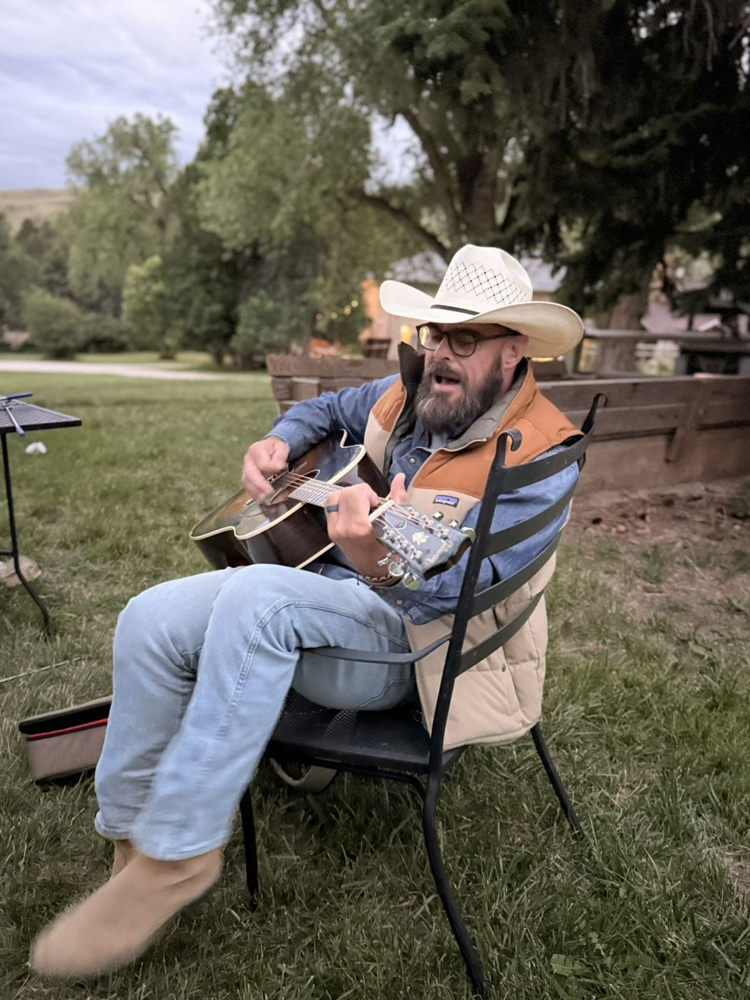
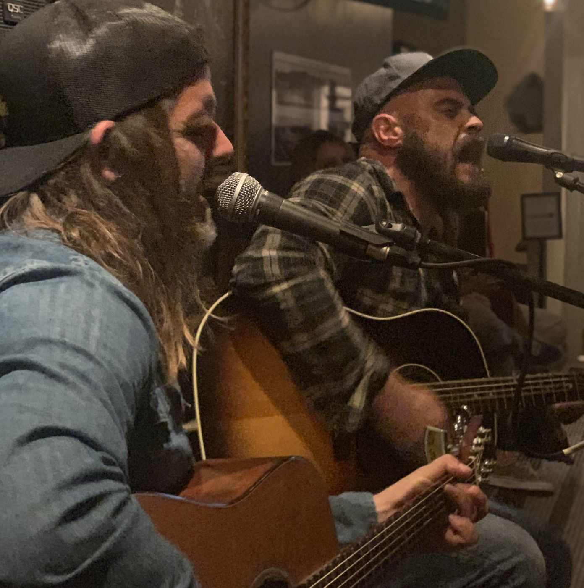
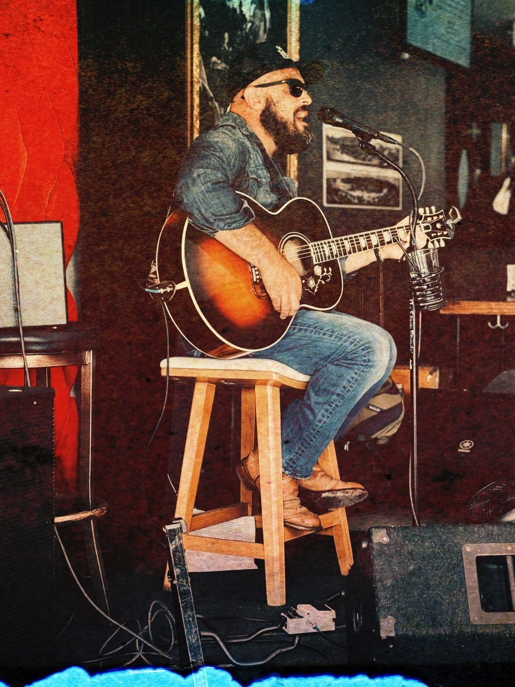

GeorgeRichardsMusic
Front-porch music from North County San Diego.

Originally from Virginia, George has called Encinitas home for the past 20 years. You've probably run into him at one of the local watering holes, playing a mix of outlaw country, Grateful Dead, Americana, folk, train songs and a handful of originals he wrote on the way home from somewhere. Solo, duo, trio, or full band, it's the same story: you'll hear songs you forgot you loved, songs you can sing along to word for word, and a few you've probably never heard before but can't wait to hear again.
Hope to see yall around town. And if you're interested in booking a show, party or wedding, we've got one of those fancy forms you can fill out below.
Shows
Come say hello. Times are local.
Upcoming
-
Roxy Encinitas
Encinitas, CA
Sat, 5:00 to 7:30 PM
Duo
-
Breakers
Encinitas, CA
Mudflap show
Thu, 7:00 to 10:00 PM
Full band
-
Boardroom Show
Del Mar Fairgrounds, Del Mar, CA
Mudflap show
Sat, 10:30 AM to 12:00 PM
Full band
-
Roxy Encinitas
Encinitas, CA
Fri, 5:00 to 7:30 PM
Duo
-
Roxy Encinitas
Encinitas, CA
Fri, 3:00 to 4:30 PM
Solo
-
Roxy Encinitas
Encinitas, CA
Fri, 5:00 to 7:30 PM
Duo
-
Roxy Encinitas
Encinitas, CA
Fri, 3:00 to 4:30 PM
Solo
-
Roxy Encinitas
Encinitas, CA
Fri, 5:00 to 7:30 PM
Duo
Photos and video
A few nights on the road and around town.


Songlist
Always a work in progress, and always adding more. Requests are welcome.
Originals 15
- Back in the Day
- Beer & Wine
- Brother John
- Cowboys & Hippies
- Early Times
- Esther
- Exit 333
- Hammered and Nailed
- Live On
- Moses and Me
- Out of Place
- Please Excuse the Mess
- Slide
- Thank You Buddy
- Town Park
Covers 276
- Highway to HellAC/DC
- Dixieland DelightAlabama
- ChattahoocheeAlan Jackson
- Blue SkyAllman Brothers Band
- Ramblin' ManAllman Brothers Band
- Shooting StarBad Company
- OpheliaThe Band
- Up on Cripple CreekThe Band
- The WeightThe Band
- Blue Moon of KentuckyBill Monroe
- Georgia on a Fast TrainBilly Joe Shaver
- Live ForeverBilly Joe Shaver
- Old Chunk of CoalBilly Joe Shaver
- Ride Me Down EasyBilly Joe Shaver
- Just the Way You AreBilly Joel
- No RainBlind Melon
- Don't Think Twice, It's All RightBob Dylan
- I Shall Be ReleasedBob Dylan
- It Takes a Lot to LaughBob Dylan
- Like a Rolling StoneBob Dylan
- Mama, You Been on My MindBob Dylan
- Mighty QuinnBob Dylan
- Tangled Up in BlueBob Dylan
- The Times They Are a-Changin'Bob Dylan
- One DropBob Marley
- One LoveBob Marley
- BatmanBob Schneider
- OrlandoBob Schneider
- The Other SideBob Schneider
- Round 'n' RoundBob Schneider
- Like a RockBob Seger
- Turn the PageBob Seger
- Born to RunBruce Springsteen
- Johnny 99Bruce Springsteen
- Reason to BelieveBruce Springsteen
- Streets of BakersfieldBuck Owens
- For What It's WorthBuffalo Springfield
- I Am a PilgrimThe Byrds
- C'est la VieChuck Berry
- Plastic JesusCool Hand Luke
- LodiCreedence Clearwater Revival
- Lookin' Out My Back DoorCreedence Clearwater Revival
- Midnight SpecialCreedence Clearwater Revival
- Pictures of YouThe Cure
- Six Days on the RoadDave Dudley
- Long Haired RedneckDavid Allan Coe
- You Never Even Called Me by My NameDavid Allan Coe
- Dust On The BottleDavid Lee Murphy
- All My Favorite BandsDawes
- Walk of LifeDire Straits
- Deep River BluesDoc Watson
- SummertimeDoc Watson
- 9 to 5Dolly Parton
- Do I Ever Cross Your MindDolly Parton
- Tulsa TimeDon Williams
- Listen to MusicThe Doobie Brothers
- Straight to HellDrivin N Cryin
- RioDuran Duran
- Lyin' EyesEagles
- Peaceful Easy FeelingEagles
- Take It EasyEagles
- Boyz-n-the-HoodEazy-E
- Peace, Love & UnderstandingElvis Costello
- Blue ChristmasElvis Presley
- Burning LoveElvis Presley
- Suspicious MindsElvis Presley
- Lay Down SallyEric Clapton
- Dim Lights, Thick SmokeFlatt & Scruggs
- Friends In Low PlacesGarth Brooks
- Much Too Young (To Feel This Damn Old)Garth Brooks
- Two Piña ColadasGarth Brooks
- Rodeo SongGary Lee
- The Race Is OnGeorge Jones
- All My Ex's Live in TexasGeorge Strait
- Amarillo By MorningGeorge Strait
- The FiremanGeorge Strait
- TroubadourGeorge Strait
- Look at Miss OhioGillian Welch
- WichitaGillian Welch
- Southern NightsGlen Campbell
- In My Hour of DarknessGram Parsons
- Sin CityGram Parsons
- AltheaGrateful Dead
- Beat It On Down the LineGrateful Dead
- BerthaGrateful Dead
- Brokedown PalaceGrateful Dead
- Brown Eyed WomenGrateful Dead
- Casey JonesGrateful Dead
- Dark HollowGrateful Dead
- DealGrateful Dead
- Deep Elem BluesGrateful Dead
- Don't Ease Me InGrateful Dead
- Franklin's TowerGrateful Dead
- Going Down the Road Feeling BadGrateful Dead
- Good Lovin'Grateful Dead
- I Know You RiderGrateful Dead
- Let the Good Times RollGrateful Dead
- MasterpieceGrateful Dead
- Me & My UncleGrateful Dead
- Monkey and the EngineerGrateful Dead
- Peggy-OGrateful Dead
- Promised LandGrateful Dead
- RippleGrateful Dead
- Rosalie McFallGrateful Dead
- Uncle John's BandGrateful Dead
- Dublin BluesGuy Clark
- L.A. FreewayGuy Clark
- Family TraditionHank Williams Jr.
- Nice ThingsHayes Carll
- You Get It AllHayes Carll
- HighwaymanThe Highwaymen
- Nellie KaneHot Rize
- Higher and HigherJackie Wilson
- In ColorJamie Johnson
- Cover Me UpJason Isbell
- If It Takes A LifetimeJason Isbell
- How Sweet It IsJerry Garcia Band
- Sisters and BrothersJerry Garcia Band
- Getting ByJerry Jeff Walker
- London Homesick BluesJerry Jeff Walker
- Mr. BojanglesJerry Jeff Walker
- Railroad LadyJerry Jeff Walker
- Rodeo CowboyJerry Jeff Walker
- Up Against the Wall Redneck MotherJerry Jeff Walker
- Bad Leroy BrownJim Croce
- Changes in Latitudes, Changes in AttitudesJimmy Buffett
- He Went to ParisJimmy Buffett
- MargaritavilleJimmy Buffett
- Nautical WheelersJimmy Buffett
- Pencil Thin MustacheJimmy Buffett
- A Pirate Looks at FortyJimmy Buffett
- VolcanoJimmy Buffett
- The Weather Is Here, I Wish You Were BeautifulJimmy Buffett
- Big Boss ManJimmy Reed
- Call Me the BreezeJJ Cale
- Rocky Mountain WayJoe Walsh
- Take Me Home, Country RoadsJohn Denver
- Gentle On My MindJohn Hartford
- Goodle DaysJohn Hartford
- Long Hot Summer DayJohn Hartford
- Angel From MontgomeryJohn Prine
- Don't Bury MeJohn Prine
- Fish and WhistleJohn Prine
- Grandpa Was a CarpenterJohn Prine
- If I CouldJohn Prine
- Mexican HomeJohn Prine
- ParadiseJohn Prine
- Picture ShowJohn Prine
- Spanish PipedreamJohn Prine
- Speed of the Sound of LonelinessJohn Prine
- Sweet RevengeJohn Prine
- A Boy Named SueJohnny Cash
- Folsom Prison BluesJohnny Cash
- Sunday MorningJohnny Cash
- Willie and the Hand JiveJohnny Otis
- I Wanna Be Like YouThe Jungle Book
- The GamblerKenny Rogers
- I May Smoke Too MuchKris Kristofferson
- The Pilgrim (Chapter 33)Kris Kristofferson
- Sunday Mornin' Comin' DownKris Kristofferson
- Long Black VeilLefty Frizzell
- EasyLionel Richie
- Dixie ChickenLittle Feat
- Willin'Little Feat
- RoyalsLorde
- Simple ManLynyrd Skynyrd
- Tuesday's GoneLynyrd Skynyrd
- Can't You SeeMarshall Tucker Band
- Louisiana Saturday NightMel McDaniel
- Down UnderMen at Work
- Big CityMerle Haggard
- Mama TriedMerle Haggard
- PromMerle Haggard
- Sing Me Back HomeMerle Haggard
- Sweet CarolineNeil Diamond
- Long May You RunNeil Young
- PowderfingerNeil Young
- Ginseng SullivanNorman Blake
- Shama Lama Ding DongOtis Day & The Knights
- (Sittin' On) The Dock of the BayOtis Redding
- Crazy TrainOzzy Osbourne
- Wave On WavePat Green
- 50 Ways To Leave Your LoverPaul Simon
- The BoxerPaul Simon
- KodachromePaul Simon
- Me and Julio Down by the SchoolyardPaul Simon
- Slip Slidin' AwayPaul Simon
- Walls of TimePeter Rowan
- Stop That TrainPeter Tosh
- Every Rose Has Its ThornPoison
- Something to Believe InPoison
- Purple RainPrince
- When Doves CryPrince
- AmyPure Prairie League
- Forever and Ever, AmenRandy Travis
- Roll with the ChangesREO Speedwagon
- Trouble In MindRichard M. Jones
- Garden PartyRicky Nelson
- You've Lost That Lovin' Feelin'Righteous Brothers
- Corpus Christi BayRobert Earl Keen
- Feeling Good AgainRobert Earl Keen
- The RideRobert Earl Keen
- The Road Goes On ForeverRobert Earl Keen
- If You're Gonna Be Dumb, You Gotta Be ToughRoger Alan Wade
- King of the RoadRoger Miller
- Faraway EyesThe Rolling Stones
- Honky Tonk WomenThe Rolling Stones
- My Sweet CarolinaRyan Adams
- Bring It On Home To MeSam Cooke
- What A Wonderful WorldSam Cooke
- Johnny Too BadThe Slickers
- Gin and JuiceSnoop Dogg
- Elijah Came to TexasSteve Earle
- The PilgrimSteve Earle
- Tom Ames' PrayerSteve Earle
- City of New OrleansSteve Goodman
- The JokerSteve Miller Band
- Rock'n MeSteve Miller Band
- Boogie On Reggae WomanStevie Wonder
- You Can Have the CrownSturgill Simpson
- Boss DJSublime
- What I GotSublime
- She Caught the KatyTaj Mahal
- Delta DawnTanya Tucker
- Amarillo HighwayTerry Allen
- Hold Me NowThompson Twins
- WaterfallsTLC
- Beer for My HorsesToby Keith
- I Love This BarToby Keith
- Ballad of the Devil's Backbone TavernTodd Snider
- Better Than Ever BluesTodd Snider
- Can't ComplainTodd Snider
- Conservative ChristianTodd Snider
- D.B. CooperTodd Snider
- Play A Train SongTodd Snider
- Vinyl RecordsTodd Snider
- Into The Great Wide OpenTom Petty
- WildflowersTom Petty
- Why You Been Gone So LongTony Rice
- Catfish JohnTraditional
- I'll Fly AwayTraditional
- In the GravelyardTraditional
- Life's Railway to HeavenTraditional
- Old Home PlaceTraditional
- Rocky TopTraditional
- Sittin' on Top of the WorldTraditional
- Sloop John BTraditional
- This Little Light of MineTraditional
- Will the Circle Be UnbrokenTraditional
- Feelin' Alright?Traffic
- It's a Great Day to Be AliveTravis Tritt
- Modern Day Bonnie and ClydeTravis Tritt
- Feathered IndiansTyler Childers
- Follow You To VirgieTyler Childers
- Universal SoundTyler Childers
- White House RoadTyler Childers
- New MadridUncle Tupelo
- Bright Side of the RoadVan Morrison
- Tupelo HoneyVan Morrison
- Are You Sure Hank Done It This WayWaylon Jennings
- Honky Tonk HeroesWaylon Jennings
- I Can Get Off on YouWaylon Jennings
- Luckenbach, TexasWaylon Jennings
- Angel Flying Too Close to the GroundWillie Nelson
- Blue Eyes Crying in the RainWillie Nelson
- Funny How Time Slips AwayWillie Nelson
- Good Hearted WomanWillie Nelson
- Hands On The WheelWillie Nelson
- I Gotta Get DrunkWillie Nelson
- Me and PaulWillie Nelson
- Mountain DewWillie Nelson
- On the Road AgainWillie Nelson
- Red Headed StrangerWillie Nelson
- Whiskey RiverWillie Nelson
- Chicken FriedZac Brown Band
- Knee DeepZac Brown Band
Book George
Bar, brewery, wedding, or backyard party? Send the date and place and I'll write back soon.
You can also follow along for show updates and clips.